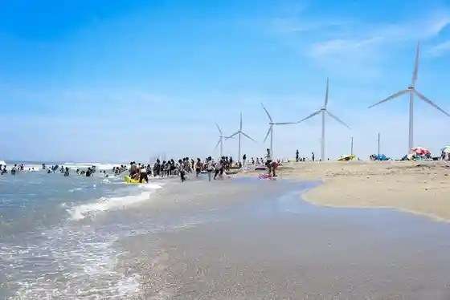
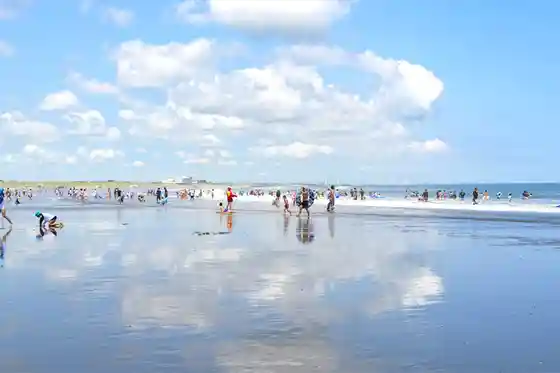
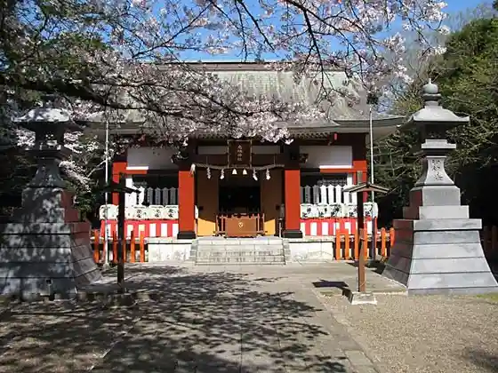
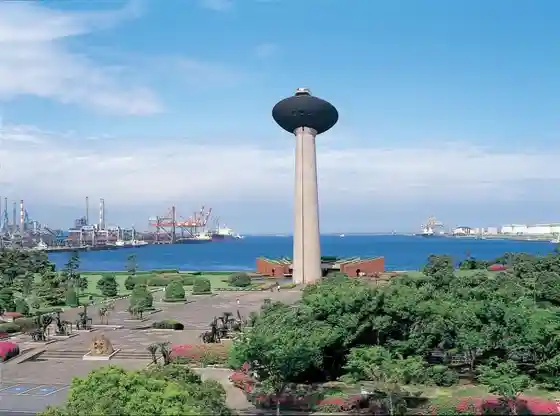

Tennen Onsen Rokko Baths
Kamisu, Ibaraki · 0299-90-0261 · Official / source link
Hikawa Hama Beach
Kamisu, Ibaraki · 0299-90-1217 · Official / source link

Hasaki Beach
Kamisu, Ibaraki · 0299-90-1217 · Official / source link

Ikisu Shrine
Kamisu, Ibaraki · 0299-92-2300 · Official / source link

Minato Park
Kamisu, Ibaraki · 0299-92-5155 · Official / source link

1000 Nin Garo
Kamisu, Ibaraki · 0299-90-1217 · Official / source link
Kamisu Onyoku Shisetsu Yu Po
Kamisu, Ibaraki · 0479-46-2424 · Official / source link
Sansan Park
Kamisu, Ibaraki · Official / source link
Rokuzaemon
Kamisu, Ibaraki · 0299-94-7138 · Official / source link
Sowa Shoku
Kamisu, Ibaraki · 0299-92-7288 · Official / source link
Shiisaido Park
Kamisu, Ibaraki · Official / source link
Kashima Konai Isshu Kengaku Fune (Yurika Go)
Kamisu, Ibaraki · 0299-92-3033 · Official / source link
Kao Kashima Kojo
Kamisu, Ibaraki · 0299-93-8311 · Official / source link
Kamisu Kaihin Sports Park
Kamisu, Ibaraki · 0299-97-1177 · Official / source link
Hasaki Uindo Farm
Kamisu, Ibaraki · 03-5487-8560 · Official / source link
Hikawa Hama Otokyanpu
Kamisu, Ibaraki · 0299-97-0567 · Official / source link
Sutekiin Keyaki
Kamisu, Ibaraki · 0299-92-4411 · Official / source link
Kami Yuki Ike Ryokuchi
Kamisu, Ibaraki · 0299-90-1111 · Official / source link
Hitachi Tone Ribasaidosaikuringurodo
Kamisu, Ibaraki · 0299-90-1150 · Official / source link
Nihonryori Maki
Kamisu, Ibaraki · 0299-95-5522 · Official / source link
KASHIMA BOLD KITCHEN
Kamisu, Ibaraki · 0299-95-5522 · Official / source link
Resort In Ao no
Kamisu, Ibaraki · 0479-44-0023 · Official / source link
JA Shiosai Hasaki Eino Keizai Center
Kamisu, Ibaraki · 0479-48-7755 · Official / source link
Fureai Center Yu Rakuraku
Kamisu, Ibaraki · 0299-90-5911 · Official / source link
Minshon Yamazaki
Kamisu, Ibaraki · 0479-44-0388 · Official / source link
Kami Zen Tera
Kamisu, Ibaraki · Official / source link
Chekkuin Kitagawa
Kamisu, Ibaraki · 0479-44-0708 · Official / source link
Otone So
Kamisu, Ibaraki · 0479-44-0635 · Official / source link
Uchiwasaboten Gunsei Chi
Kamisu, Ibaraki · Official / source link
Supotsu Plaza Ishibashi
Kamisu, Ibaraki · 0479-44-2162 · Official / source link
Chugokuryori Momo Shika Ro
Kamisu, Ibaraki · 0299-95-5522 · Official / source link
Supotsupoto Hisashi
Kamisu, Ibaraki · 0479-48-1085 · Official / source link
Towa Tadokoro
Kamisu, Ibaraki · 0299-96-1957 · Official / source link
O Yado
Kamisu, Ibaraki · 0479-44-0016 · Official / source link
Furattosurii sakaeya
Kamisu, Ibaraki · 0479-44-2039 · Official / source link
Nyu Shika Minami
Kamisu, Ibaraki · 0479-48-1100 · Official / source link
Teppanyaki Momiji
Kamisu, Ibaraki · 0299-95-5522 · Official / source link
Puchihausu Atorie
Kamisu, Ibaraki · 0479-44-4397 · Official / source link
Rupinasu
Kamisu, Ibaraki · 0299-92-4411 · Official / source link
SONIA COFFEE
Kamisu, Ibaraki · 0299-95-5544 · Official / source link